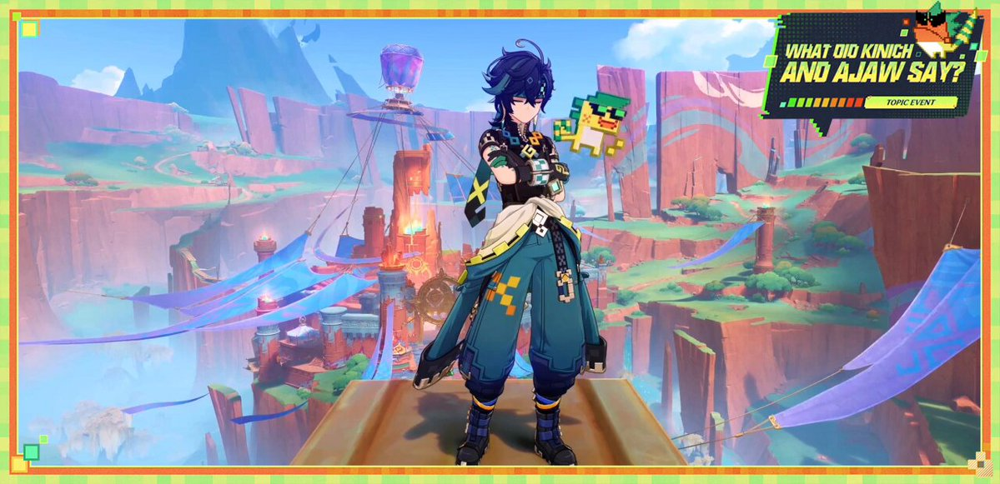
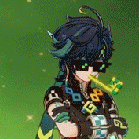

Kinich Natlan
Kinich is a playable Dendro character you can get by wishing and earning primogems in the game Genshin Impact.
This link is where I got the photos
Kinich is a Saurian Hunter belonging to the Scions of the Canopy, known by the ancient name "Malipo." He is frequently accompanied by the self-styled "Almighty Dragonlord," K'uhual Ajaw.
His Backstory
Before Kinich was seven, he lived with his family.
His father was a courier who would take three days off for every day he worked. He spent his time off gambling, hoping to win more money than he bet.
If Kinich's dad won, he would bring Kinich a box of fancy sweets and pick flowers for his wife. But if he lost, he'd borrow money from a coworker to get drunk, trying to forget his losses.
However, Kinich's mother stayed clear-headed and often argued with him while holding Kinich. Sometimes, the father would acknowledge his mistakes and promise to stop gambling for good.
But at other times, a fight would erupt in the kitchen, often ending with Kinich's father as the victor due to his physical strength. His defeated mother would then quietly return to tending to their backyard crops. While she wasn't skilled in fighting, she was a talented farmer, which was essential for feeding the three mouths in their household.
Before long, Kinich's father lost their house, forcing the family to move to the base of a mountain, far from their tribe. It was in this new place that Kinich learned to plant Grainfruit, twist castor oil plants into rope, mix tapioca flour to make noodles, and master the art of trap-making to hunt boars.
One night, his mother quietly sneaked out, leaving Kinich with his father without making a sound, abandoning her young son.
Kinich couldn't remember if his mother ever said goodbye, but he took on most of the household chores. As he grew, he discovered ways to escape. His athleticism was remarkable, and each day he became faster, making it harder for his father to catch him.
Each time he dashed out the door, the wind would briefly drown out his father's furious shouts, giving him a precious moment of freedom. Perhaps fate had compassion for him, as he was about to discover what true freedom really meant.
On his seventh birthday, for the first time, he asked his father if he had heard anything about his mother.
No words were necessary to answer him. His father chased after him, eyes bloodshot from a hangover, ready to let him have it. But years of drinking had weakened him, and as they ran past a cliff, he lost his footing and fell over the edge.
By the time Kinich reacted, the man he had lived with for so long lay at the bottom of the mountain, never to rise again. At first, Kinich felt dazed, as if he were snow-blind, but a sudden wave of sourness jolted him out of that numbness.
He squeezed his eyes shut, scrunched up his nose, and took deep breaths, contorting his face to keep the tears at bay. After what felt like a long time, he grabbed his father's grappling hook and pulled his father's lifeless body back home.
His father had never shown him how to use a grappling hook, but Kinich had picked it up by secretly observing a few times. Now, he dashed past several tree branches, the wind rushing past his ears.
On his seventh birthday, the mountains gifted him freedom, but when he opened the box, all he found was loneliness inside.
This link is where I got the informationIf you want to know more about Kinich, click the link above ↑
Photos + GIFs © miHoYo. All rights reserved. Used for non-commercial fan purposes
This link is where I got the GIFs